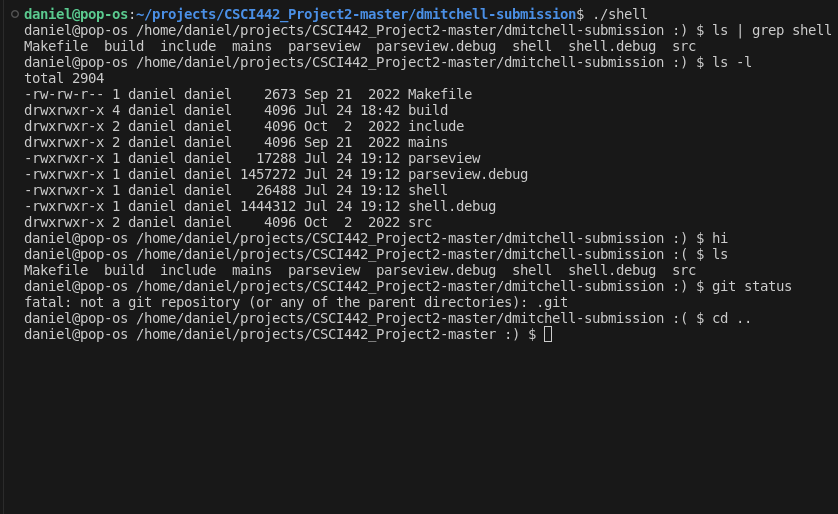

This is a game project written in the Godot game engine for a class in graduate school at Mines.
It's a top-down action game that I wrote with a partner at school. The idea of the game was to
have a dungeon-crawler-style game with action gameplay. One unique feature of this game is the attack
type system that is demonstrated in the pause menu; the player can choose from a variety of attacks that
change the damage and range of their attacks. This allows for a player to choose their own style of play.
gameplay (no audio)
This is an implementation of a Unix-style shell that I wrote. It allows the user to run most commands
that they can in a normal bash environment. The smiley face indicates that the command executed
successfully and the frown that it failed.

Here is the program running.